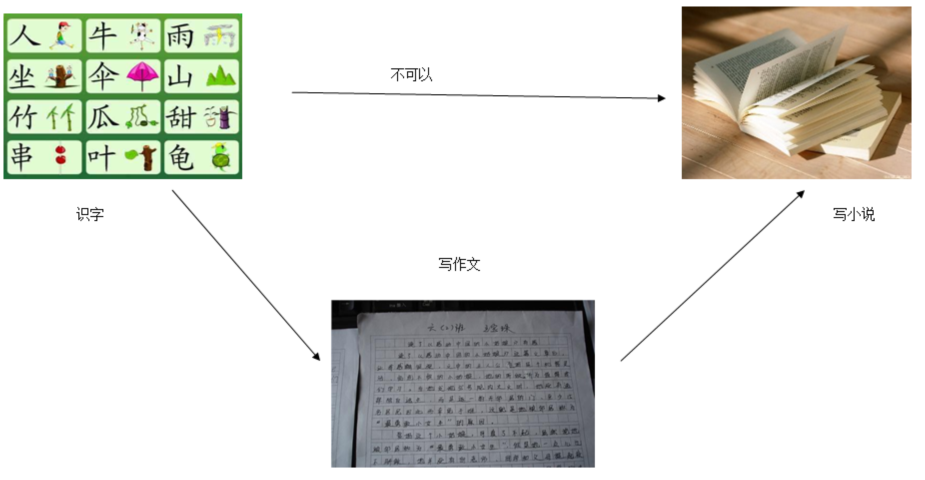

问题1：为什么要学习数据结构
数据结构是教你如何在现有程序的基础上把它变得更优（运算更快，占用资源更少），它改变的是程序的存储运算结构而不是程序语言本身。
如果把程序看成一辆汽车，那么程序语言就构成了这辆车的车身和轮胎。而算法则是这辆车的核心--发运机。这辆车跑得是快是慢，关键就在于发动机的好坏，而数据结构就是用来改造发动机的。
数据结构是编程的思维，编程的灵魂，算法的精髓所在，没有了数据结构，程序就好像一个空核，最低效率的。学习数据结构的目的就是提高自己的思想，“想成为高手，数据结构一定要强”。

如果说学习语文的最终目的是写小说的话，那么能不能在识字、组词、造句后就直接写小说了，肯定是不行的，
中间还有一个必经的阶段：就是写作文。写作文的直接目的有两个：
1.掌握写作套路、技巧（理论水平），保证以后写小说的质量
2.提高写作水平（动手能力），为以后写小说打好基础
学习一门计算机语言就好比识字阶段，以后开发项目就好比写小说，中间的离不开数据结构的学习，就好比写作文。
1.高级计算机程序设计的理论指导
我塞牙了，那么就要用到牙签这“数据结构”，当然你用指甲也行，只不过“性能”没那么好；
我要拧螺母，肯定用扳手这个“数据结构”，当然你用钳子也行，只不过也没那么好用。
学习数据结构，就是为了了解以后在IT行业里搬砖需要用到什么工具，这些工具有什么利弊，应用于什么场景。
你会发现这些基础的“工具”也存在着一些缺陷，你不满足于此工具，此时，你就开始自己在这些数据结构的基础上加以改造，
这就叫做自定义数据结构
掌握了开车的本领，桑塔纳、宝马、奔驰、老年代步车都会开。
数据结构可以采用不同的语言来描述和实现，此处自然是Java语言
2.提升编程能力
个人认为数据结构是编程最重要的基本功没有之一
学习了Java、python、android、C、C++，你就成为编程高手了吗。
不见得，每门语言都是入门而已，水平并没有得到多少锻炼
学习一门数据结构，掌握了各种简单、复杂数据类型的算法，编程能力就会有大的提升，甚至质的飞跃，内力深厚了。
3.面试中经常问到
为什么面试官喜欢问数据结构
能够看出一个同学是否基础扎实，能够看出一个人的发展后劲
因为数据结构本身也有难度
问题2：有哪些数据结构
线性表、栈、队列、（字符）串、数组、广义表、树、二叉树、图
重点是线性表、二叉树
对于每种数据结构会讲解其添加、更新、删除、查询、排序等操作的实现
数据结构与算法不可分
对于查询和排序一般单独拿出来讲解
我们的数据结构要讲解哪些内容
1.数据结构与算法入门
2.各种数据结构：线性表、栈、队列、（递归） 树、二叉树、图
3.查找和排序
问题3：学习数据结构的四种境界
境界1：听懂理论、听懂算法思路 (理论家、眼高手低，总比不知道强多了)
境界2：完成主要数据结构基本算法的实现（理论+实践，数据结构入门了）
境界3：完成更多数据结构更多算法的实现（进步提高数据结构功底）
境界4：融会贯通、举一反三，在后续开发中综合应用数据结构知识（数据结构就是哲学思想，只要和实践结合才能学好）
学习数据结构不是一日之功，对于初学者要达到境界2，后续学习和工作中不断研究学习